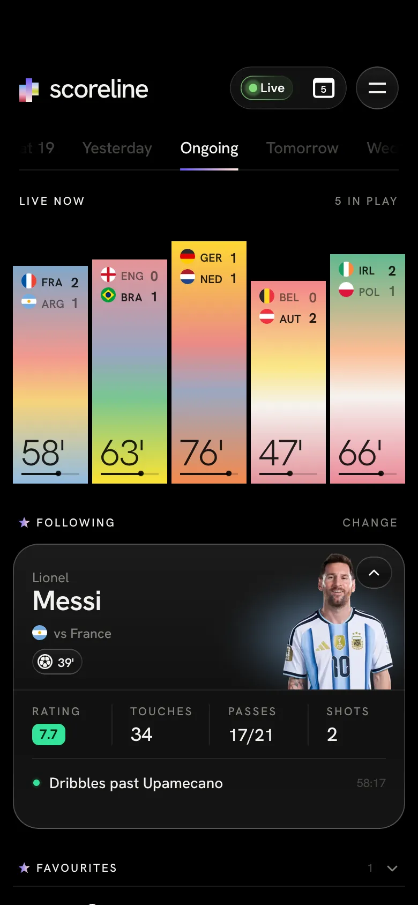

The phone is the real app. It follows along as you scroll, and you can take over any time.
On a match night, that’s the first thing you want to know. Each card grows a little with every minute, so you can tell which games are nearly over.
Every touch, live. Pick a player and they get their own card at the top.
Facts first: the score and who’s on top. Then every event, minute by minute.
Every shot, corner, foul and more, counted as it happens.
See who’s playing where, then tap anyone for their own stats in this match.
A goal or a red card in another match comes in quietly. Your match gets the whole screen.
